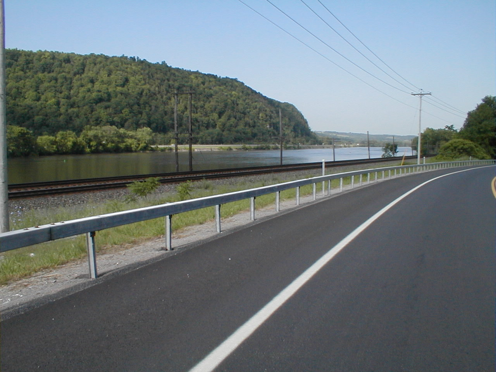

Day 45: June 26, Little Falls, NY to Albany, NYPrevious Day - Home - Next Day Photo of the DayOur morning ride, following the Mohawk River on the Canal Trail. Keegan's LogDay 45: June 26, Little Falls, NY to Albany, NY Mileage: 75.33 milesWeather: Hot and sunny Vertical Climb: 950 feet Riding Time: 4:50 Today was yet another beautiful ride in almost ideal weather, I'm just not sure how much more of this we can take! After a quick buffet breakfast at the hotel, dad tried to put air in his tires and ended up with a flat, luckily we were running early enough that it wasn't a big setback. We turned onto Route 5, which we would follow for the first 50 miles of the day, the big shoulder and light morning traffic made for nice riding. We were again on the Erie Trail, for most of the morning we rode between wooded hillsides on either side of the valley. Traveling in parallel were the Erie (or Barge) Canal, two railroad tracks, and Highway 5, three generations of transportation all going to the same place. The road stayed flat for the most part, with an occasional climb up a hillside when the valley became too crowded for all three 'roads'. The sag was on a hilltop at 34 miles into the ride, there was a nice vista overlooking the valley below. We stayed for a while, there was no great hurry on this short day. Trevor joined Bruce at the sag, that was about the last we saw of the tandem for a while. We left the canal soon after the sag, headed for the rolling hills. At about 54 miles we rode through a rather bad part of Schechnectady, we were warned yesterday to ride this part of the trip in a group. Once we left town we stopped for lunch at a little restaurant, I had a Nancy Melt, my familiar grilled ham and cheese but with turkey too. Must be a local thing. It wasn't far at all to the hotel from there, we got in a little early but luckily our room was already ready. I took an unintentional nap before running some errands and doing some laundry, then we had route rap outside under a big tree. Dinner was at King's Buffet, a chinese restaurant this time. Dad, Ethel and I went to Wal*Mart afterward, then back to the room to relax for the evening. Tomorrow we ride to Greenfield, Massachusetts, it's only a 78 mile day but we have over 5,000 feet of climbing. That actually ties the most we've had so far, all the way back to Prescott, Arizona. Should be great weather again, and only three riding days to go. Phil's LogThis was a lovely, and an easy day. We followed the Mohawk River Valley (and Route 5) eastward to Albany. Weather was nearly perfect with dead calm winds but a bit of heat and humidity moving in. This is a very old area. Some was settled long before the Revolutionary War, and we saw one house that went back to 1710. New York is good with historical markers and there were many along the route. I also noted that we were following three historic paths, but on thinking on it, really four. Certainly the Mohawk Indians who inhabited this valley traversed it. The White Man came next, resisted by the Indians, and traveled by horse and small boats, and then later by canals. That was followed by railroads that were built on the river banks, and those are still quite active with freight including lots of lumber. Following that came the road, first the local rode we rode on the north side of the river, then the interstate on the south. There are few Indian remnants visible to the casual traveler, but everything that followed is still there. We were advised to go through Schecnectady in groups as it was a "rough" area. We heeded the advice, but didn't find that to be true. We finally found a lunch place near the end of our 69 mile drive, a small bar. I had a hot pastrami sandwich, my first in years. We arrived the motel early and I struck out on foot for a Wal*Mart. I offered to be the tipping coordinator, and needed supplies, mostly envelopes, to carry out the task. Latham, where we actually are, has wonderfully restrictive regulation on signage and it made the stores hard to find, even though I was very close. Small price to pay! We need more of that restrictive regulation in Indiana! Dale, tomorrow we DO ride through Williamstown. I'll look for things I remember from visiting the campus. And we ride the Berkshires tomorrow, it is the second hardest climbing day of the tour. But at this point, all of us are pretty strong and 78 miles, with mountainous climbs, are not intimidating to most. And we get to have breakfast tomorrow at Friendly's! |
{kind=link}